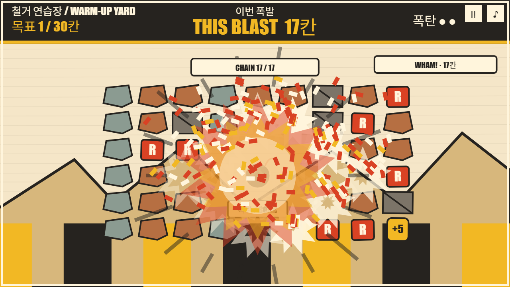
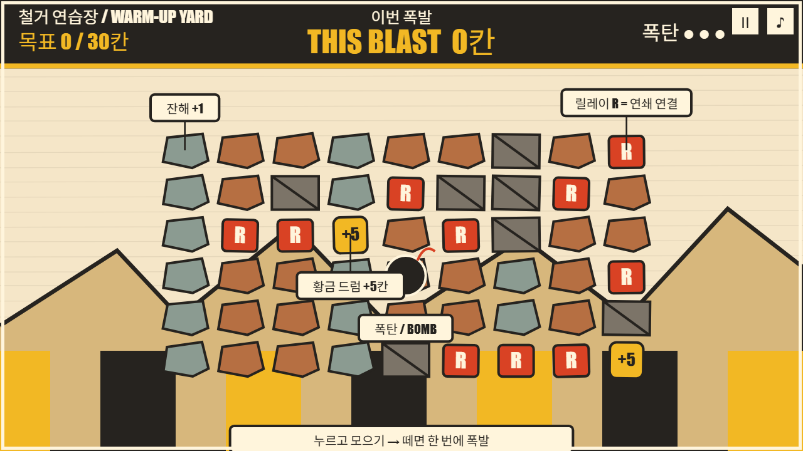
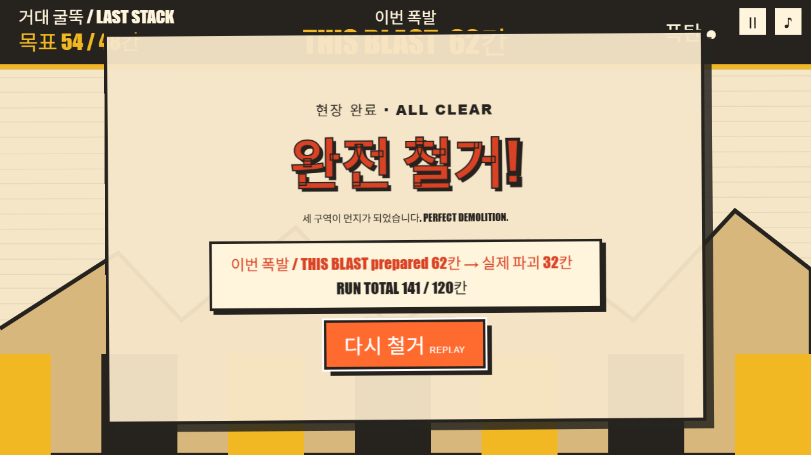
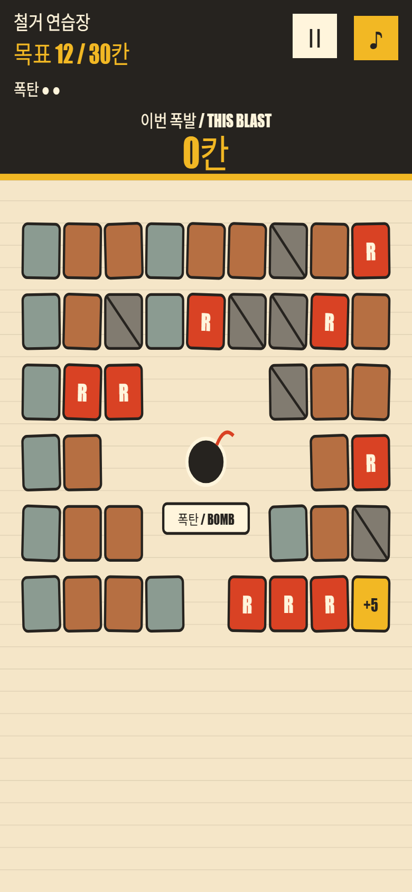

보이는 약속
누르는 매 순간 THIS BLAST가 커집니다. 화면 속 단 하나의 권위 수치가 다음 결과를 미리 설명합니다.
GAME 01 HOLD · PACK · RELEASE · BOOM
화면을 채운 고철과 금을 오래 누르는 만큼 한 숫자로 압축하고, 손을 떼는 순간 그 약속을 폭발로 지불합니다. 입력 하나와 숫자 하나가 기대, 위험, 결과를 한 줄로 잇는 철거 아케이드입니다.
PLAY NOW
01 / ONE CAUSAL LOOP
HOLD pointer/Space는 화면에 보이는 scrap과 gold를 하나의 authoritative THIS BLAST 숫자로 압축합니다. release spends that frozen number in a sequential chain explosion. 폭발이 시작된 뒤에는 수치가 바뀌지 않으므로, 플레이어가 본 약속과 실제 파괴 결과가 정확히 이어집니다.
나머지는 모두 이 단일 인과 루프의 amplifier입니다. redline PERFECT ×2는 같은 숫자를 배로 만들고, 끝까지 버티면 overheat 60%로 자동 방출됩니다. R relays는 폭발 경로를 퍼뜨리고, +5 gold는 별도 자원이 아니라 같은 blast에 더해집니다. 각 현장은 three charges per lot, 전체 런은 three escalating lots로 압력을 높입니다.
누르는 매 순간 THIS BLAST가 커집니다. 화면 속 단 하나의 권위 수치가 다음 결과를 미리 설명합니다.
PERFECT ×2를 노리되 과열 자동 방출을 감수합니다. 타이밍의 위험도 같은 blast 안에서만 작동합니다.
R relay는 새 점수를 만들지 않고 순차 폭발의 경로만 넓혀, 압축한 수치의 공간적 효과를 증폭합니다.
현장마다 세 번뿐인 charge로 목표를 넘고, 세 lot의 상승 곡선을 완주합니다.
02 / BUILD EVIDENCE



03 / QA & PROVENANCE
결정론 규칙 스위트는 frozen prepared value, 소비된 오브젝트의 지속성, rubble-aware propagation, 모든 seeded lot의 three-charge 완주 가능성을 포함해 17/17 통과했습니다. 실제 browser smoke QA로 desktop과 mobile 390×844, pause 안정성, native Space keyboard 입력, pointer/touch, focus와 live-region accessibility, 결과 tally를 확인했습니다.
이 포트폴리오 빌드는 승인된 source commit dad1fc5844b49295d957951443bd41cea4da28a3의 네 runtime blob을 바이트 그대로 보존합니다.